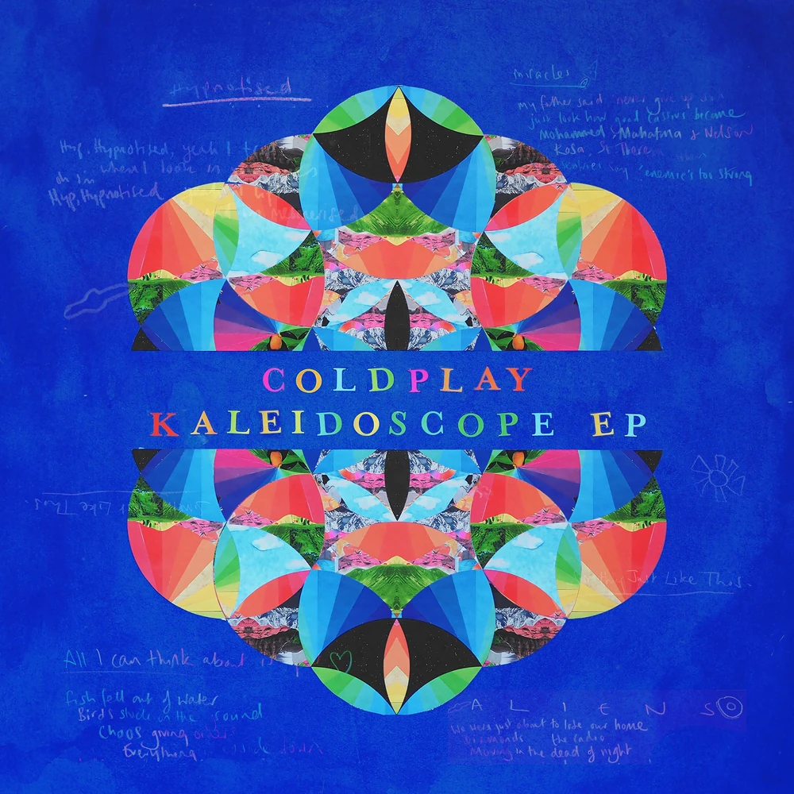
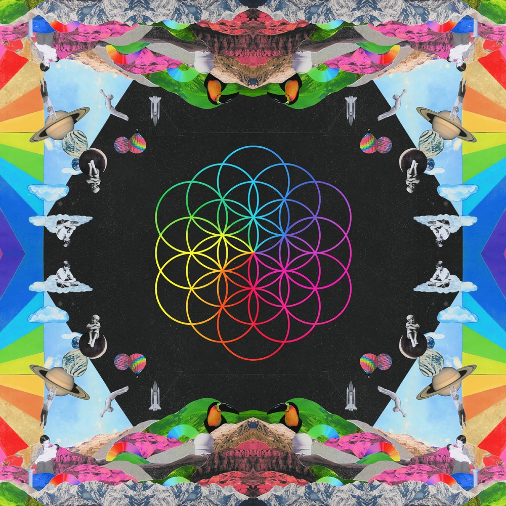
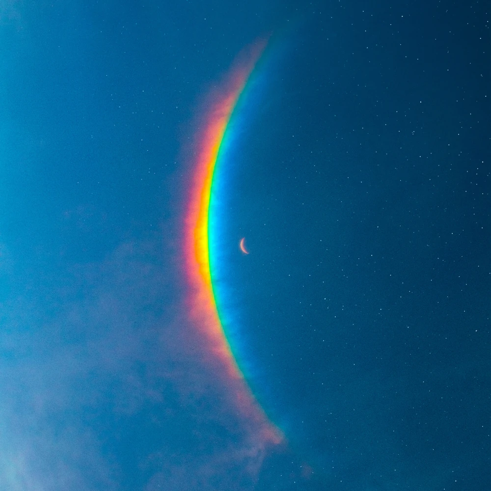
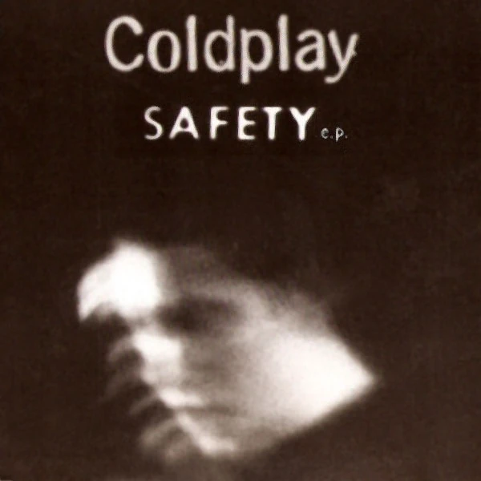
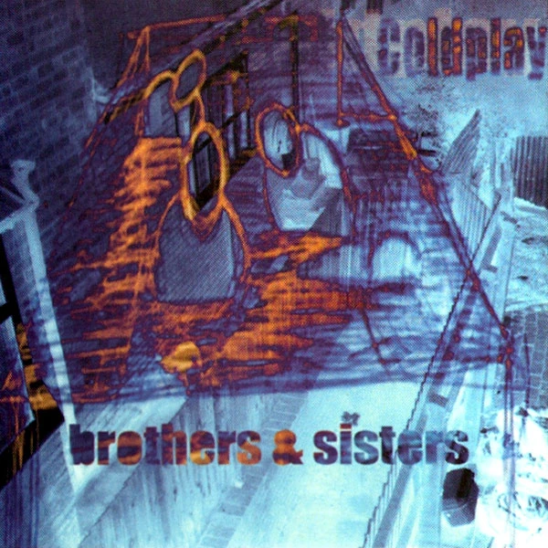
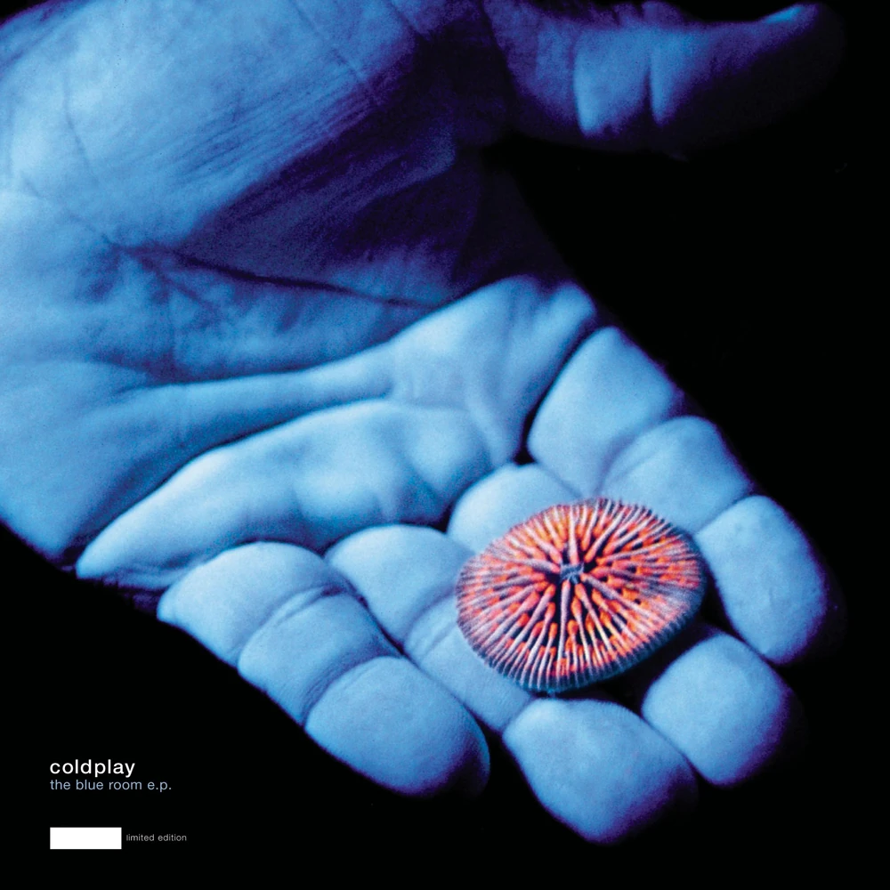
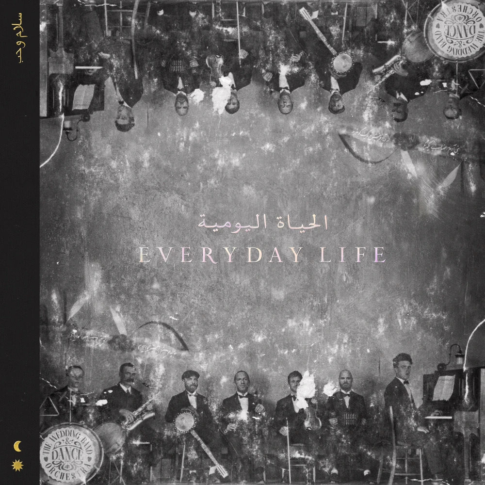
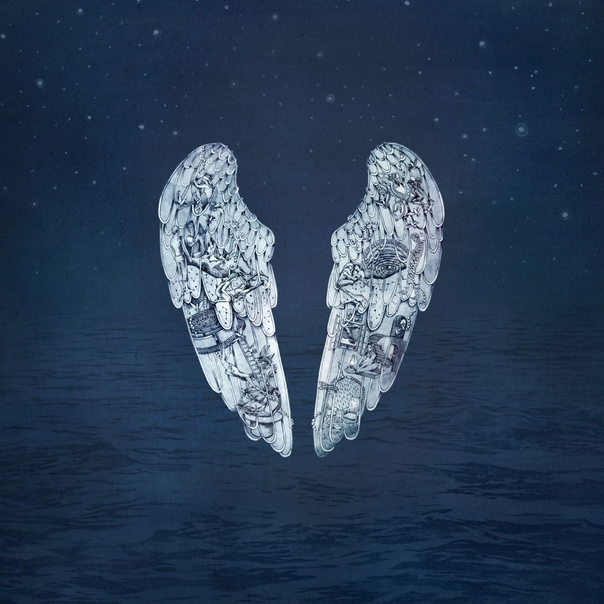
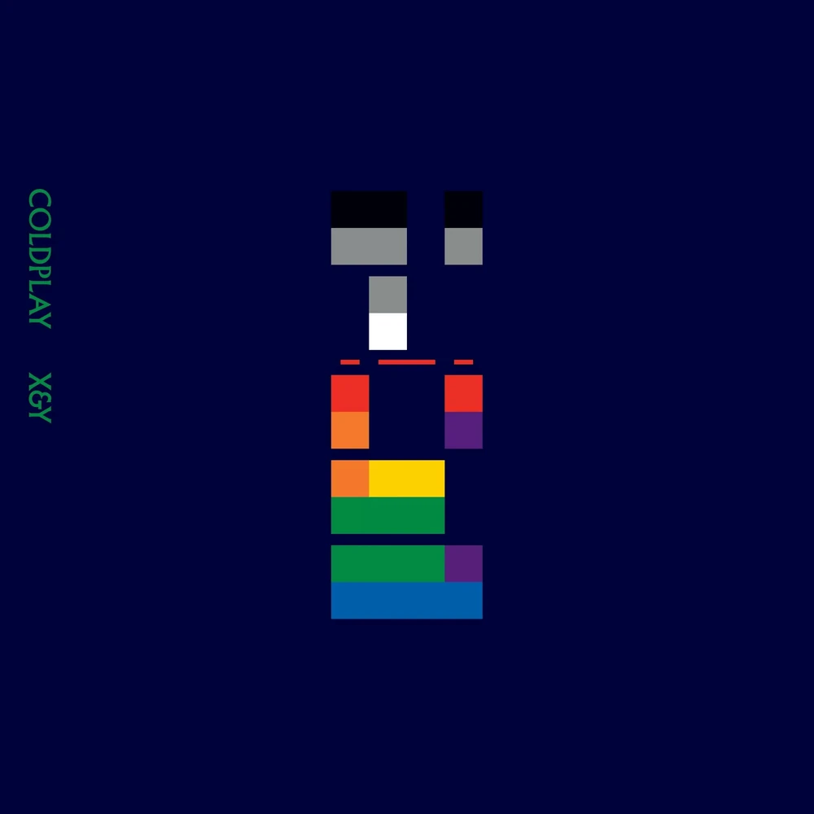
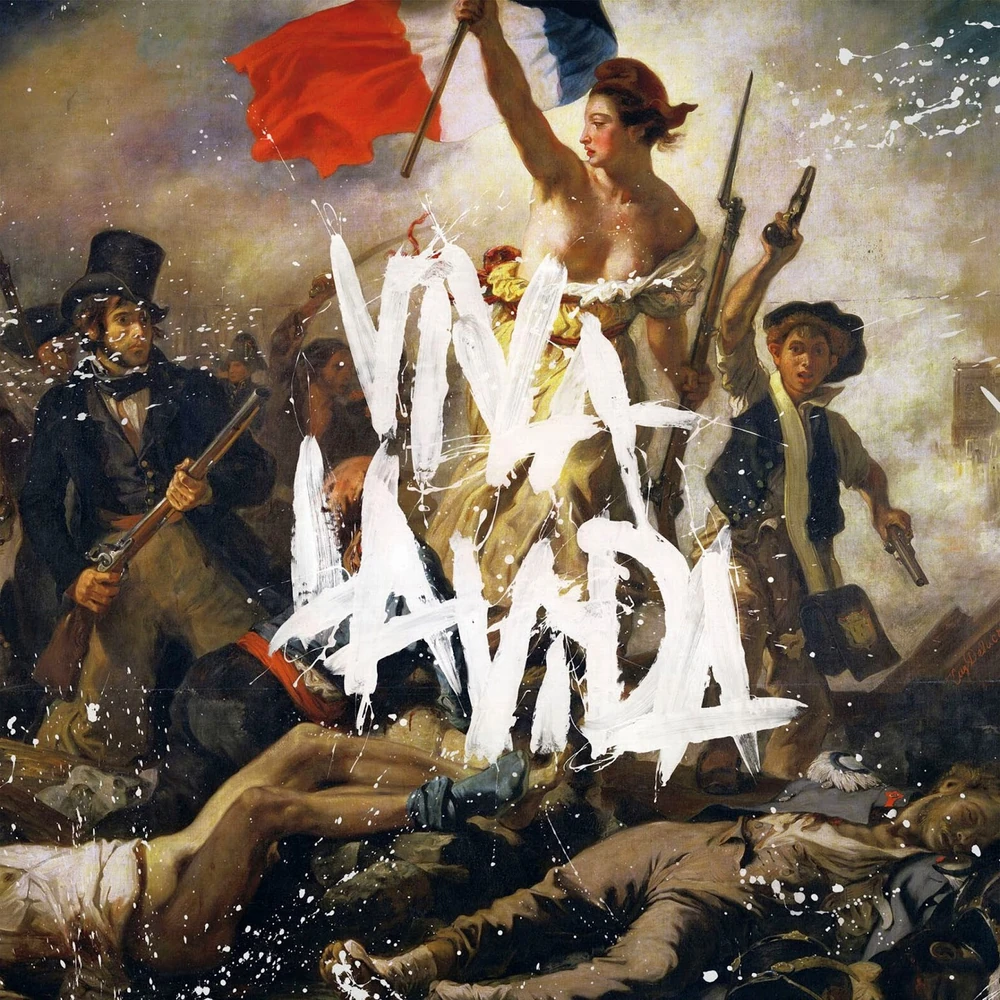

I haven't written my actual reviews of each of the albums (I just rated them and some tracks as well). The reviews will be where I say [album title] is [artist's name] nth album
I haven't finished ranking tracklistings past A Head Full of Dreams
I haven't customized the colors for anything past A Head Full of Dreams
★★★★★ I hate this song/album.
★★★★★ I strongly dislike this song/album.
★★★★★ I do not like this song/album.
★★★★★ This song/album is eh.
★★★★★ This song/album is mid.
★★★★★ This song/album is okay.
★★★★★ I like this song/album.
★★★★★ I really like this song/album.
★★★★★ I love this song/album.
★★★★★ This song/album is perfect.
★★★★★ I beg you to listen to this song/album; it is beyond perfect.
.jpg)
Coldplay (as shown from left to right (except for phil)) is a band comprised of Jonny Buckland (guitar), Chirs Martin (vocals & piano), Guy Berryman (bass), William Champion, and Phil Harvey (who is the creative director and doesn't play an instrument)
Music of the Spheres (2021) (Full title being: Music of the Spheres Volume 1: From Earth With Love) is Coldplay's 9th LP.
The Kalideoscope EP (2017) is Coldplay's 12th EP.
All I Can Think About is You
Miracles (Someone Special)
A L I E N S
Something Just Like This (Tokyo Remix)
Hypnotised
A Head Full of Dreams (2015) is Coldplay's 7th LP.
A Head Full of Dreams
Birds
Hymn for the Weekend
Everglow
Adventure of a Lifetime
Fun
Kalideoscope
Army of One
X Marks the Spot
Amazing Day
Colour Spectrum
Up&Up
Moon Music (2024) (Full title being: Music of the Spheres Volume 2: Moon Music) is Coldplay's 10th LP.
The Safety EP (1998) is Coldplay's 1st EP.
Bigger Stronger
No More Keeping My Feet Off The Ground
Such a Rush
Brothers and Sisters (1999) is Coldplay's 2nd EP.
The Blue Room (1999) is Coldplay's 3rd EP.
Mylo Xyloto (2011) is Coldplay's 5th LP.

Prospekt's March (2008) is Coldplay's 8th EP.
Everyday Life (2019) is Coldplay's 8th LP.
A Rush of Blood to the Head (2002) is Coldplay's 2nd LP.
Parachutes (2000) is Coldplay's 1st LP.

Ghost Stories (2014) is Coldplay's 6th LP.
X&Y (2005) is Coldplay's 3rd LP.
Viva La Vida or Death and All His Friends (2008) is Coldplay's 4th LP.

Tally Hall (as shown from left to right) is a band comprised of Andrew Horowitz (green tie), Ross Federman (grey tie), Rob Cantor (yellow tie), Joe Hawley (red tie), and Zubin Sedghi (blue tie).
Just a Friend is the 1st single released by Tally Hall under Needlejuice Records.

hawaiipartii (not to be mistaken for Hawaii: Part II) by Miracle Musical (ミラクルミュージカル) is a collection of 8-bit chiptunes based on the Hawaii: Part II album.

Sketches 3D is the only album by edu (who is Andrew Horowitz under a psuedonym).

Not a Trampoline is the only album by Rob Cantor.

Hawaii Part II: part ii is a collection of demos from the Hawaii: Part II album by Miracle Musical (ミラクルミュージカル)

Complete Demos is the first compilation of demos by Tally Hall.

Joe Hawley Joe Hawley is the only solo album by Joe Hawley.

Admittedly Incomplete Demos is the second compilation of demos by Tally Hall.

Candle on the Water is the second single by Miracle Musical (ミラクルミュージカル).

Variations on a Cloud is the first single by Miracle Musical (ミラクルミュージカル).

Hawaii Part II is the only album by Miracle Musical (ミラクルミュージカル) which is a side project spearheaded by band member Joe Hawley and with contributions from every band member except Andrew.

Turn the Lights Off is the 2nd single released by Tally Hall under Needlejuice Records.

Marvin's Marvelous Mechanical Museum (2005) is Tally Hall's 1st LP.

Marvin's Marvelous Mechanical Museum (2008) is a remake of Tally Hall's 1st LP.

Good & Evil is Tally Hall's 2nd LP.